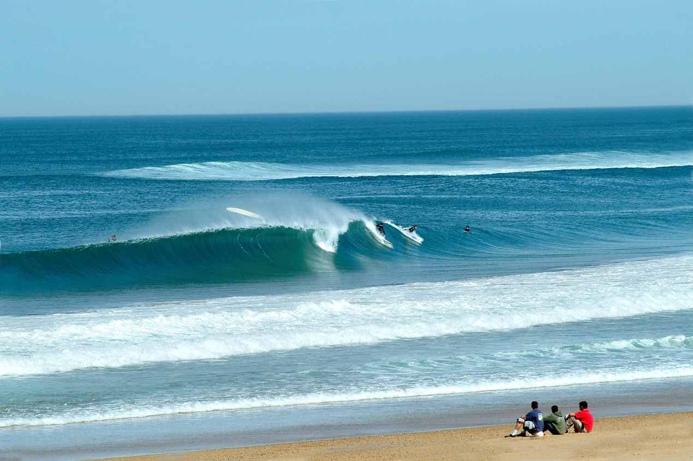
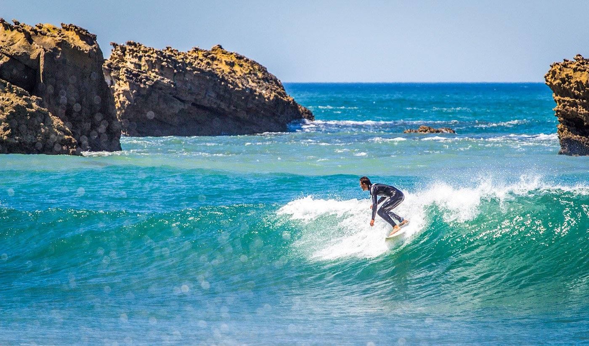

Liste des spots incontournables :
- Hossegor
- Biarritz
- Lacanau
Top 3 des spots recommandés :
- La Gravière
- La sud
- Côte des Basques
Spot de la Gravière
Un spot légendaire connu pour ses vagues puissantes.
Spot de Biarritz
Un spot idéal pour les surfeurs de tous niveaux.